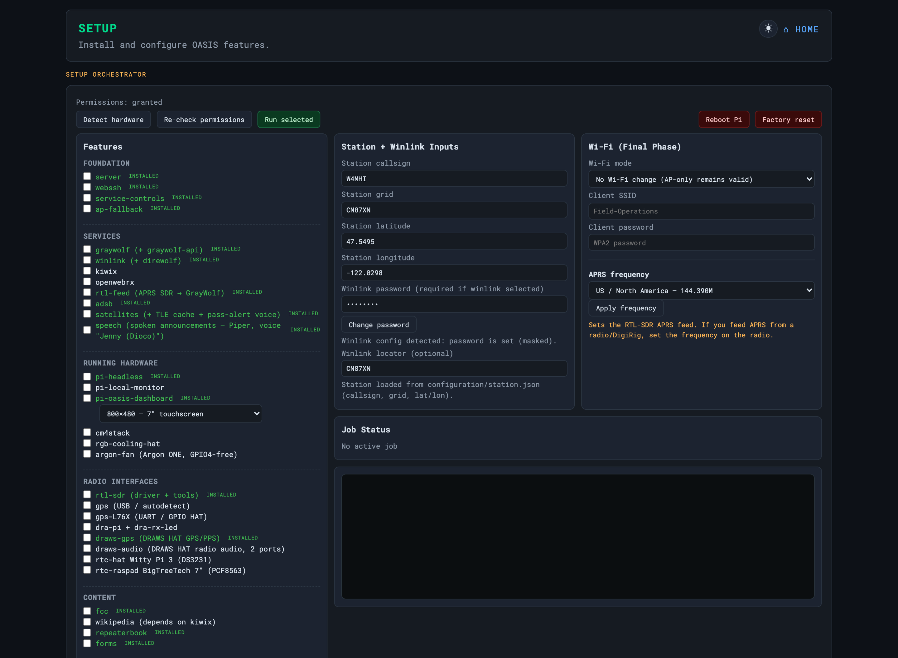

The Setup Menu
setup-oasis.py — the front door for a Pi deployment

On a Pi, setup-oasis.py is the front door. It is a grouped checkbox
menu that delegates to the individual install-* / enable-*
scripts, so each stays the single source of truth. Tick what you want; it runs the
matching scripts in order, pulls in prerequisites, and asks for
your password just once. The pre-checked items give you a working
field station out of the box — server, web terminal, service controls, Wi-Fi
fallback, and the offline reference data. Re-run the menu anytime to add features.
Version-aware & idempotent. Every installer installs when absent, upgrades when newer, and keeps what you have otherwise — never downgrades. It picks the newest source (apt vs the bundle) and the packages for your OS version, so an older USB bundle can’t clobber a newer package.
The checkboxes are grouped into five sections. The same list is served by the browser
setup page at server/system/setup.html, so a box already running OASIS can
add features without an SSH session.
Foundation
| Menu item | Default | What it gives you |
|---|---|---|
server | on | The Flask web server — dashboard, FCC lookup, map tiles — and its systemd unit. Foundation for nearly everything else. |
webssh | on | Browser terminal (ttyd) on :7681. |
service-controls | on | Scoped sudoers rule so the dashboard start/stop buttons work — see Service Controls. |
ap-fallback | on | Pi hosts the OASIS hotspot when no known network is in range. |
Services
All opt-in — none of these are pre-checked.
| Menu item | What it gives you |
|---|---|
graywolf (+ graywolf-api) | APRS TNC / iGate / digipeater on :8080 plus the history API on :8085. |
winlink (+ direwolf) | Pat client and web UI on :8082, with direwolf for the RF path — see Winlink. |
kiwix | kiwix-serve on :8081 for ZIM content. |
openwebrx | RX-only SDR web UI on :8073. |
rtl-feed (APRS SDR → GrayWolf) | The RTL-SDR APRS receive chain feeding GrayWolf — see Feeding APRS. The registry key is rtl-sdr-feed; it pulls in rtl-sdr and is installed disabled, so it never grabs a dongle you did not route to it. |
adsb | dump1090-fa plus the OASIS ADS-B recorder API — see ADS-B Aircraft. |
satellites (+ TLE cache + pass-alert voice) | Skyfield pass prediction, the roster build, the TLE cache and the pass-alert voice — see Satellites. |
speech | Spoken announcements via Piper — see Station Voice. One of the few installers that needs no root. |
rtl-feed deliberately sits above adsb in the
list. A single setup run installs in order, and the feed must get to probe for its
dongle before dump1090-fa claims one.
Running Hardware
Display and chassis options, all opt-in.
| Menu item | What it gives you |
|---|---|
pi-headless | Runs the Pi with no desktop. Needs a reboot. |
pi-local-monitor | Local display support. Needs a reboot. |
pi-oasis-dashboard | The Chromium kiosk autostart — see Panel & Kiosk. A dropdown beside it picks the panel size: 800×480 (7″ touchscreen) or 1920×1200 (10″ wide panel). Needs a reboot. |
cm4stack | CM4 carrier-board support. Needs a reboot. |
rgb-cooling-hat | RGB cooling HAT fan control. |
argon-fan (Argon ONE, GPIO4-free) | Fan-only control for the Argon ONE case that leaves GPIO4 alone, so it cannot fight a GPS PPS line. |
Radio Interfaces
Dongles, HATs, GPS and real-time clocks — all opt-in.
| Menu item | What it gives you |
|---|---|
rtl-sdr (driver + tools) | librtlsdr and the rtl_* tools. Required by the APRS SDR feed, ADS-B and satellite listening. |
gps (USB / autodetect) | gpsd against a USB GNSS puck — see GPS Time & RTC. |
gps-L76X (UART / GPIO HAT) | The L76X GNSS HAT on the UART, with PPS. Registry key gps-l76x. |
dra-pi + dra-rx-led | DRA-Pi radio interface plus its receive LED. Depends on graywolf. |
draws-gps (DRAWS HAT GPS/PPS) | The GPS and PPS side of a DRAWS HAT. |
draws-audio (DRAWS HAT radio audio, 2 ports) | The two radio audio ports of a DRAWS HAT — see Audio Hardware. |
rtc-hat Witty Pi 3 (DS3231) | DS3231 real-time clock. Registry key rtc. |
rtc-raspad BigTreeTech 7″ (PCF8563) | PCF8563 real-time clock on the BigTreeTech panel. |
Content
| Menu item | Default | What it gives you |
|---|---|---|
fcc | on | Downloads + indexes the FCC amateur DB (~160 MB). |
wikipedia (depends on kiwix) | — | Downloads a Wikipedia ZIM for Kiwix (1 GB → ~100 GB). Pulls in kiwix. |
repeaterbook | on | Shows the dashboard link — drop your own repeaterbook.csv in. |
forms | on | Toggles the ICS-205/213/214/309 dashboard section. |
The only hard requirement underneath the menu is the server itself; everything else is
per-feature. Most installers need root — the exceptions are server,
speech, fcc, wikipedia, repeaterbook
and forms, which touch nothing privileged.
Troubleshooting
| Symptom | Cause & fix |
|---|---|
| A feature is greyed out / can’t be ticked | It self-gates on hardware — e.g. satellite listening and ADS-B need an RTL-SDR. Press Detect hardware to re-probe. |
| Permissions: needed, not granted | Press Re-check permissions. Some installs need sudo scope; the menu tells you what is missing. |
| An install job seems lost after a server restart | The UI recovers — reopen the setup page and the Job Status pane re-syncs to the running (or finished) job. |
| An install hangs | Watch the Job Status pane; the per-service installer logs the real error. Re-running is safe (idempotent, never downgrades). |